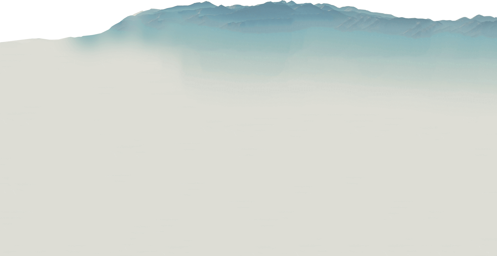
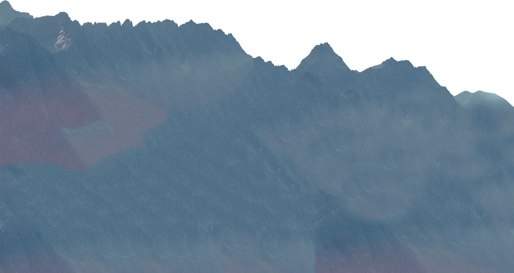
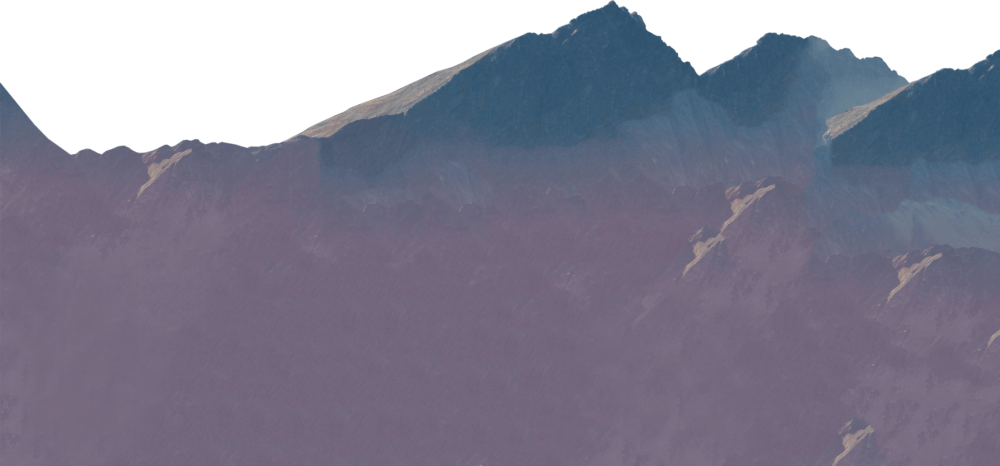
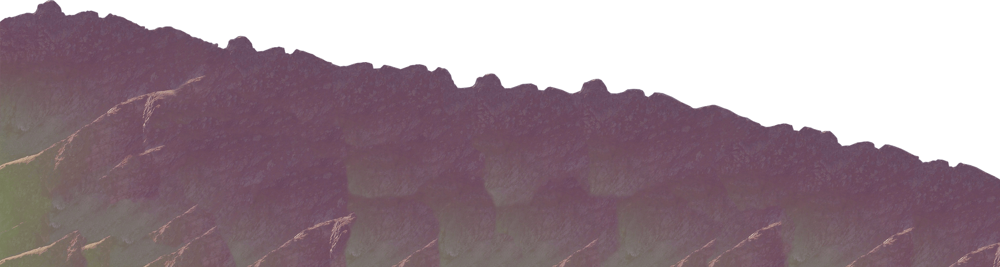

Суров Константин
Личный сайт веб-разработчика
Мои работы

Что обо мне говорят
-
Этот парень проходил обучение веб-разработке не где-то, а в LoftSchool! 5 месяцев только самых тяжелых испытаний и бессонных ночей!
Ковальчук Дмитрийоснователь Loftschool -
Этот код выдержит любые испытания. Только пожалуйста, не загружается сайт на слишком старых браузерах!
Сабанцев Владимирпреподаватель